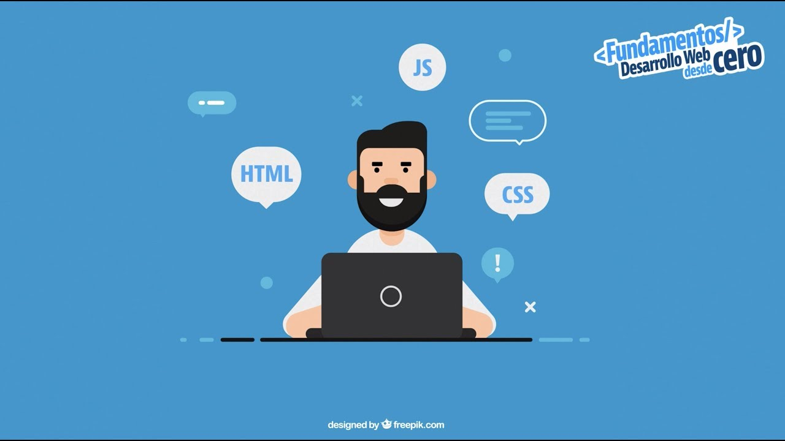

¿Que es Frontend?

El Frontend es la parte del desarrollo web que se ocupa de la interfaz de usuario (UI, por sus siglas en inglés) y la experiencia del usuario (UX, por sus siglas en inglés). En términos sencillos, el frontend es todo lo que los usuarios ven y con lo que interactúan directamente en un sitio web o una aplicación web.
Fundamentos del frontend
Un desarrollador frontend es responsable de construir y diseñar las páginas web o las aplicaciones que los usuarios ven e interactúan. El objetivo de un desarrollador frontend es asegurarse de que el sitio web sea atractivo, funcional y fácil de usar.
- HTML (HyperText Markup Languaje)
- CSS (Cascading Style Sheets)

es un lenguaje usado para estructurar el contenido de las paginas web, Es el bloque basico sobre el que se contruye toda la web, con esta aplicacion se pueden definir elementos como encabezado, parrafos,listas, imagenes, enlaces, formularios, tablas, entre otros elementos que conforman la estructura.

CSS es el lenguaje de estilo que se usa oara definir el diseño y la presentacion de los elementos HTML con CSS, se puede controlar la apariencia de los elementos de la pagina, como el color, las fuentes, los margenes, espaciado, entre otros elementos.